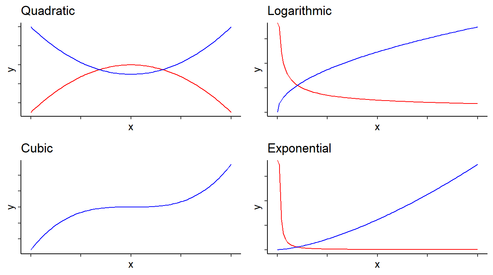
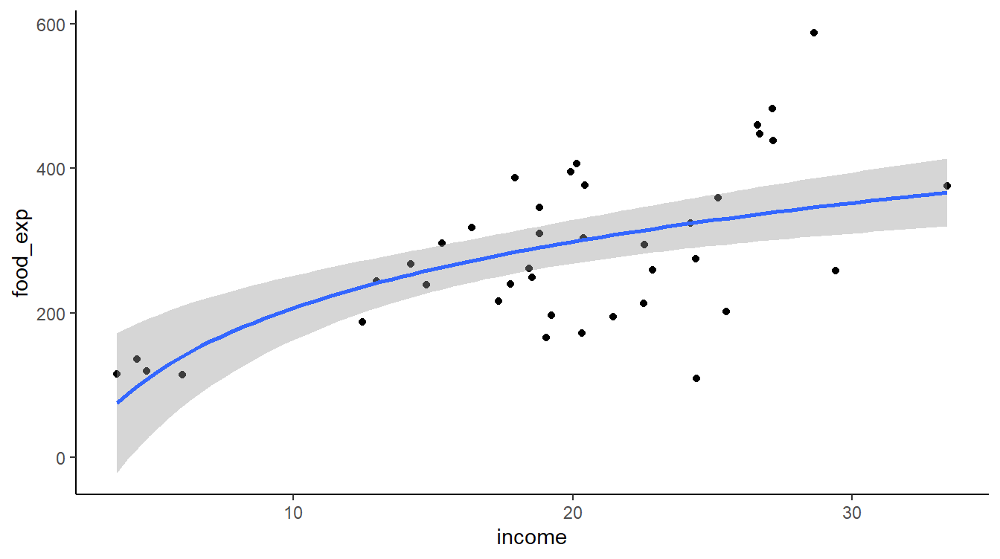
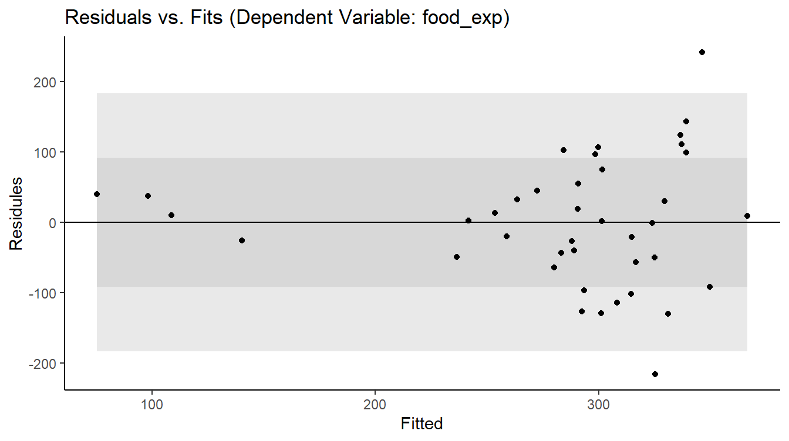
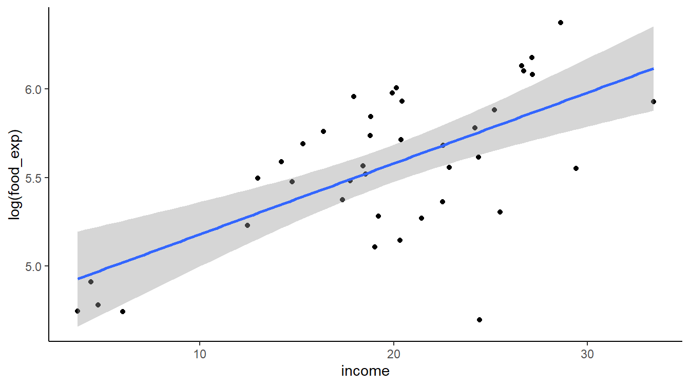
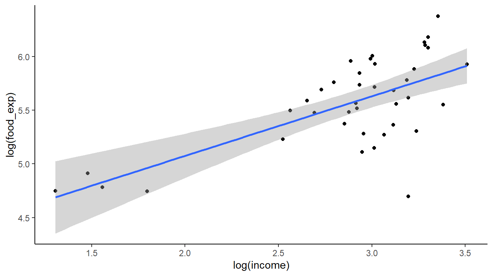
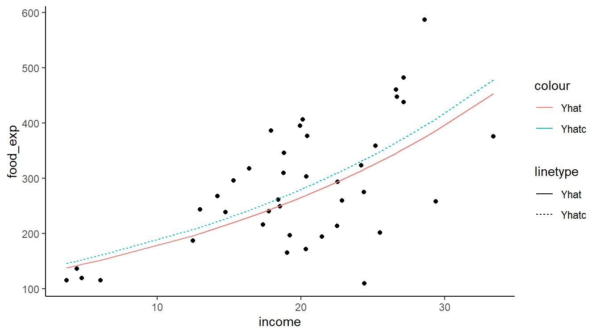

Simple Nonlinear Models
Introduction
In this tutorial, we will evaluate basic nonlinear relationships model.
Load data and estimate model
For this tutorial, we will be using the food data from PoE that can be found at http://www.principlesofeconometrics.com/poe5/poe5data.html. To make it easier to access this data, I have set up a shortened URL: http://tiny.cc/poe -data. Thus, to load food.csv into R, use the following URL: http://tiny.cc/poe-data/food.csv. We use the following code to load the data and estimate the model we will use in this tutorial.
food <- read.csv(url("http://tiny.cc/poe-data/food.csv"))
mod1 <- lm(food_exp ~ income, data = food)Functional Forms
Lecture
Explanation
Some basic functional forms

Above is a small sample of the functional forms that can be used to fit data. To determine the proper model, you need to consider the following:
- the theoretical relationship between the variables
- the plots of the data
- the residual diagnostics
Common functional forms used in regression
In the table below, I have listed some common transformations applied to data and how thoes transformation effect the interpretaition of the regression coefficents.
| Name | Function | Slope = \(\frac{{\delta y}}{{\delta x}}\) | Elasticity = \(\frac{{\% \Delta y}}{{\% \Delta x}}\) |
|---|---|---|---|
| Linear | \(y = {\beta_1} + {\beta_2}x + \varepsilon\) | \(\beta _2\) | \({\beta _2}\frac{x}{y}\) |
| Quadratic | \(y = {\beta _1} + {\beta _2}{x^2} + \varepsilon\) | \(2{\beta _2}x\) | \(2{\beta _2}x\frac{x}{y}\) |
| Cubic | \(y = {\beta _1} + {\beta _2}{x^3} + \varepsilon\) | \(3{\beta _2}x^2\) | \(3{\beta _2}x^2\frac{x}{y}\) |
| Log-Log | \(\log (y) = {\beta _1} + {\beta _2}\log (x) + \varepsilon\) | \({\beta _2}\frac{y}{x}\) | \({\beta _2}\) |
| Log-Linear | \(\log (y) = {\beta _1} + {\beta _2}x + \varepsilon\) | \({\beta _2}y\) | \({\beta _2}x\) |
| Linear-Log | \(y = {\beta _1} + {\beta _2}\log (x) + \varepsilon\) | \({\beta _2}\frac{1}{x}\) | \({\beta _2}\frac{1}{y}\) |
Let’s try some example regressions
Linear-Log Models
In linear-log models, the dependent variable \(y\) is regressed on the natural log of the independent variables, i.e. \(y = {\beta _1} + {\beta _2}\log (x) + \varepsilon\).
mod2 <- lm(food_exp~log(income), data=food)
summary(mod2)
Call:
lm(formula = food_exp ~ log(income), data = food)
Residuals:
Min 1Q Median 3Q Max
-215.427 -51.666 2.186 47.819 241.548
Coefficients:
Estimate Std. Error t value Pr(>|t|)
(Intercept) -97.19 84.24 -1.154 0.256
log(income) 132.17 28.80 4.588 4.76e-05 ***
---
Signif. codes: 0 '***' 0.001 '**' 0.01 '*' 0.05 '.' 0.1 ' ' 1
Residual standard error: 91.57 on 38 degrees of freedom
Multiple R-squared: 0.3565, Adjusted R-squared: 0.3396
F-statistic: 21.05 on 1 and 38 DF, p-value: 4.76e-05We can use ggplot() to draw a scater plot of the data with the regression curve superimposed.
food %>% ggplot(aes(x=income, y=food_exp)) +
geom_point() +
geom_smooth(method=lm, formula=y~log(x), se=TRUE) +
theme_classic()  And we can use the plot.fitted() function we defined previously to draw the Residual vs. Fit Plot.
plot.fitted(mod2)
The the two plots above indicate that the linear log model is better than the a linear model, but the linear log model is certainly not perfect.
More models with logs
mod3 <- lm(log(food_exp)~income, data=food)
summary(mod3)
Call:
lm(formula = log(food_exp) ~ income, data = food)
Residuals:
Min 1Q Median 3Q Max
-1.05993 -0.18838 0.01555 0.26305 0.45933
Coefficients:
Estimate Std. Error t value Pr(>|t|)
(Intercept) 4.780239 0.158959 30.072 < 2e-16 ***
income 0.040030 0.007665 5.222 6.62e-06 ***
---
Signif. codes: 0 '***' 0.001 '**' 0.01 '*' 0.05 '.' 0.1 ' ' 1
Residual standard error: 0.3278 on 38 degrees of freedom
Multiple R-squared: 0.4178, Adjusted R-squared: 0.4025
F-statistic: 27.27 on 1 and 38 DF, p-value: 6.616e-06food %>% ggplot(aes(x=income, y=log(food_exp))) +
geom_point() +
geom_smooth(method=lm, se=TRUE) +
theme_classic()
mod4 <- lm(log(food_exp)~log(income), data=food)
summary(mod4)
Call:
lm(formula = log(food_exp) ~ log(income), data = food)
Residuals:
Min 1Q Median 3Q Max
-1.04199 -0.15160 0.03017 0.24523 0.54810
Coefficients:
Estimate Std. Error t value Pr(>|t|)
(Intercept) 3.9636 0.2944 13.464 4.84e-16 ***
log(income) 0.5559 0.1007 5.522 2.57e-06 ***
---
Signif. codes: 0 '***' 0.001 '**' 0.01 '*' 0.05 '.' 0.1 ' ' 1
Residual standard error: 0.32 on 38 degrees of freedom
Multiple R-squared: 0.4452, Adjusted R-squared: 0.4306
F-statistic: 30.5 on 1 and 38 DF, p-value: 2.573e-06food %>% ggplot(aes(x=log(income), y=log(food_exp))) +
geom_point() +
geom_smooth(method=lm, se=TRUE) +
theme_classic()
You try
Estimate a log-linear model and store it in an object named mod3, plot income vs. log of food expenditure with the regression line superimposed, and draw the Residuals vs. Fitted Plot.
Residuals vs. Fitted Plot
Prediction
Lecture
Explanition
The log-linear model, \(\log(y) = \beta_1 + \beta_2 x\), has a logarithmic term on the left-hand side of the equation; thus, to predict \(y\) a natural choice for prediction is
\[\hat y = \exp \left[ {\log (y)} \right] = \exp \left( {{b_1} + {b_2}x} \right)\] But this prediction is known to be biased. To correct for the bias, we can multiply \(\hat{y}\) the following correction factor \(e^{\hat{\sigma}^2/2}\), so that \[\hat{y}_c=\hat{y}e^{\hat{\sigma}^2/2}=\exp \left( {{b_1} + {b_2}x} + \hat{\sigma}^2/2 \right). \] The following code calculates both the corrected and uncorrected prediction of food expenditure from the log-linear model.
mod3 <- lm(log(food_exp)~income, data=food)
b1 <- coef(mod3)[[1]]
b2 <- coef(mod3)[[2]]
smod3<-summary(mod3)
sighat2 <- smod3$sigma^2
yhat <- exp(b1+b2*food$income)
yhatc <- exp(b1+b2*food$income + sighat2/2)And we can quickly plot the model as follows.
food %>% ggplot() +
geom_point(aes(x=income, y=food_exp)) +
geom_line(aes(x=income,y=yhat, linetype="Yhat", color="Yhat")) +
geom_line(aes(x=income,y=yhatc, linetype="Yhatc", color="Yhatc")) +
theme_classic()
You try
Instructions
Summary of all code
mod2 <- lm(food_exp~log(income), data=food)
summary(mod2)
food %>% ggplot(aes(x=income, y=food_exp)) +
geom_point() +
geom_smooth(method=lm, formula=y~log(x), se=TRUE) +
theme_classic()
plot.fitted(mod2)
mod3 <- lm(log(food_exp)~income, data=food)
summary(mod3)
food %>% ggplot(aes(x=income, y=log(food_exp))) +
geom_point() +
geom_smooth(method=lm, se=TRUE) +
theme_classic()
mod4 <- lm(log(food_exp)~log(income), data=food)
summary(mod4)
food %>% ggplot(aes(x=log(income), y=log(food_exp))) +
geom_point() +
geom_smooth(method=lm, se=TRUE) +
theme_classic()You did it!
In the next tutorial, we will learn about accessing Goodness-of-Fit. The next lesson is available here: https://logan-kelly.shinyapps.io/4-2_GoF/